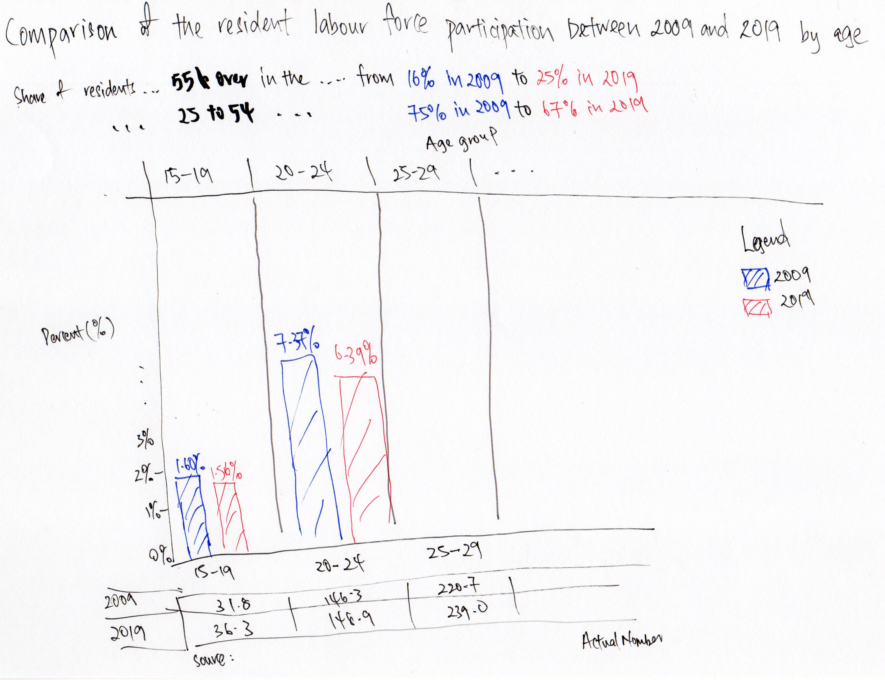
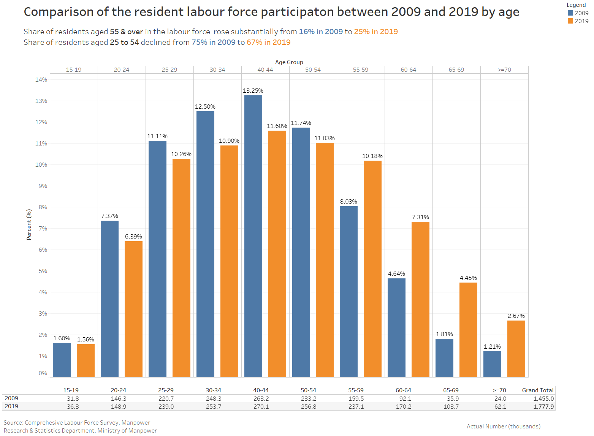

Overview

A. Critiques
Clarity
- The details highlighted in the write-up is not visualised clearly on the chart. While readers could manually calculate the changes of the sum of the multiple age groups across the 2 years, it would be more intuitive if the charts could convey the message intended by the author.
- The data table below the chart is useful in showing the difference in the percentages of resident labour force between the 2 years. However, just by looking at the line chart itself, readers would not be able to figure out the percentage value as the y-axis is not present.
- The data points could not be identified easily, especially so for age 55-59 in 2009 and both age 55-59 and 60-64 in 2019 where the lines appears to be linear.
- At the first glance of the chart and without reading into the details, readers may mistake the chart as depicting changes over time as that it the typical use of line chart.
- While “Per Cent” is the spelling in UK English, which is also the English system adopted by Singapore, “Percent” is more commonly used in Singapore educational system. Local readers may second guess on whether the term is referring to “per cent” in monetary term.
- The title of the chart is clear but provides little details of what the chart is about.
Aesthetics
- The colours of the data table matches that of the line chart. It helps readers to easily identify the corresponding line when they are referring to the data table.
- The 2 colours choice is not ideal and it does not allow readers to immediately notice the differences especially when the report was published in low resolution.
- There is no grid lines to guide the data points to the x-axis, requiring reader to put in more effort to mentally trace the data point to the corresponding age group.
- Line graphs are typically used to display data or information that changes over time continously or when trend needs to be observed. Since age groups are categorical, it would be more appropriate to for bar graphs or pie charts to be use especially since the data shown is in percentage.
B. Proposed alternative Data Visualisation
| No. | Critiques (Clarity) | Suggestions |
|---|---|---|
| 1 | The details highlighted in the write-up is not visualised clearly on the chart. While readers could manually calculate the changes of the sum of the multiple age groups across the 2 years, it would be more intuitive if the charts could convey the message intended by the author. | Text could be added below the title to emphasise on the message the author is trying to convey |
| 2 | The data table below the chart is useful in showing the difference in the percentages of resident labour force between the 2 years. However, just by looking at the line chart itself, readers would not be able to figure out the percentage value as the y-axis is not present. | Retain the data table. Add the y-axis with grid lines to enable readers the option to read off the chart without having to refer to the table. |
| 3 | The data points could not be identified easily, especially so for age 55-59 in 2009 and both age 55-59 and 60-64 in 2019 where the lines appears to be linear. | Either have data points with size larger than the thickness of the lines, or change the chart type to a bar chart to better depict the percentage level |
| 4 | At the first glance of the chart and without reading into the details, readers may mistake the chart as depicting changes over time as that it the typical use of line chart. | Since age group is of categorical type, the use of bar charts will be more ideal. |
| 5 | While “Per Cent” is the spelling in UK English, which is also the English system adopted by Singapore, “Percent” is more commonly used in Singapore educational system. Local readers may second guess on whether the term is referring to “per cent” in monetary term. | Change the unit title from “Per Cent” to “Percent”, and include the symbol “%” for make it more identifiable. |
| 6 | The title of the chart is clear but provides little details of what the chart is about. | Improve the title by changing it to “Comparison of the resident labour force participaton between 2009 and 2019 by age”. |
| No. | Critiques (Aesthetics) | Suggestions |
|---|---|---|
| 1 | The colours of the data table matches that of the line chart. It helps readers to easily identify the corresponding line when they are referring to the data table. | Retain the use of matching colours of chart and data table. |
| 2 | The 2 colours are not very distinct. To make the matter worse, the background is of grey colour - same color but of different tone as 2009 line. It is a poor choice of colours especially when the report was published in low resolution. | Improve the colour contrast by changing the colour from dark grey-blue to orange-blue, and use white background. |
| 3 | There is no grid lines to guide the data points to the x-axis, requiring reader to put in more effort to mentally trace the data point to the corresponding age group. | Since it is proposed that the chart type be changed to bar chart, there is no longer a need for vertical grid line or reference line. However, if line chart is to be use, grid lines should be added. |
| 4 | Line graphs are typically used to display data or information that changes over time continously or when trend needs to be observed. Since age groups are categorical, it would be more appropriate to for bar graphs or pie charts to be use especially since the data shown is in percentage. | As aforementioned, the chart type proposed is bar chart. |
C. Proposed Data Visualisation

D. Step-by-step description of the Data Visualisation preparation
1. Preparation of data source
Download the Excel data (7) Resident Labour Force Aged Fifteen Years and Over by Age and Sex, 2009 - 2019 (June) from MOM site.

2. Reformat the data in sheet T7_T using Microsoft Excel
Select the entire sheet and Clear Formats
Delete Rows 1 to 4, 6, and 19
Cut cell B1 and past in cell D1
Delete Columns A to C and F to X
Insert new columns at Column D and compute the percentage of total for each age group
Rename “Age (Years)” as “Age Group”, “2009” as “2009 Number”, “2019” as “2019 Number”, and the computed percentages as “2009” and “2019” respectively
Find and replace the spacing in the data under Column A, and rename “70 & Over” as “>=70”
Finally, remove the other sheets and save the file as “Cleaned Data.xlsx”

3. Importing to Tableau
Open up Tableau and import Cleaned Data.xlsx

4. Visualising using bar chart
On a new worksheet, drag and drop Age Group to Columns and 2009 and 2019 to Rows

Select side-by-side bars under Show Me


Turn on Show Mark Labels to display the percentage value above each bar
Change the number format of both measures 2009 and 2019 to percentage by right-clicking the measures, select Default Properties > Number Format > Percentage


Similarly, format the y-axis value to percentage by right-clicking the y-axis, Format > Scale > Numbers > Percentage

Since the measure names are displayed as legend at the* side, there is no need to have “2009” and “2019” repeated across the a-xis. This could be removed by selecting the drop down at Measure Names and unchecking Show Header

As a final touch up on the bar chart, right-click on any part of the y-axis and select Edit Axis. Under Title, change the text from “Value” to “Percent (%)”

5. Creating data table
On a new worksheet, drag and drop 2009 Number and 2019 Number to Rows, and Age Group to Columns. Next, select text tables under Show Me

Swap Measure Names from Columns to Rows, and Age Group from Rows to Columns.
Amend the header names by right-clicking on 2009 Number and 2019 Number, and change them to 2009 and 2019 respectively by selecting Edit Alias.
select Analytics on the side panel and click on Totals to compute the grand total of resident labour force in each year

Final step here is to hide away the title by right-clicking on the title and selecting Hide Title

6. Creating Dashboard
On a new dashboard, drag and drop the Bar Chart into the centre area. Next, drag and drop the Data Table below the Bar Chart as shown

Adjust the hide and width of the bar chart and data table so that the age groups of the table is aligned to the x-axis of the bar chart. Here, there is a need to fix the size of the dashboard as setting the size to Automatic will mess up the intended alignment between the bar chart and the data table.
Double-click on the title of the bar chart to amend the title, and include message that the author wants to convey

Finally, include the necessary text and source by draging the Text object into the dashboard
The final dashboard is as shown below, and could be access via the link provided.
 https://public.tableau.com/profile/dylan7338#!/vizhome/DatavizMakeover1_16118012680840/Dashboard1
E. Observations revealed by the Data Visualisation prepared
From the data visualisation prepared, the following observation could be made:
The labour force participation rate in each age group aligns to the life milestones of general Singapore population.
- Age 15-19 has the lowest LFPR as most of the residents in this group are still schooling. The fact that there is a small number in this age group in the labour force could be due to the need to supplement household income, early drop out of school, or as part of vacation part-time work in June period.
- At Age 20-24, Singaporeans typically either pursue further study or join the work force after completing their tertiary education. This explains the spike in the LFPR of age 25-29 as many graduate from the universities.
The difference between the LFPR of age 50-54 and age groups 55 and over is rather drastic. This could be due to the 2007 - 2008 Global Financial Crisis where many employees were retrenched. Retrenchment at the age above 50 poses difficulties to those seeking reemployment. This resulted in the significant lower LFPR of age 55 and over in 2009.
The increase in LFPR of age group 55 and over from 2009 to 2019 could also be attributed to the aging population issue that Singapore is facing. Other reasons for later retirement could be due to the rise in the cost of living.
Distill is a publication format for scientific and technical writing, native to the web.
Learn more about using Distill at https://rstudio.github.io/distill.